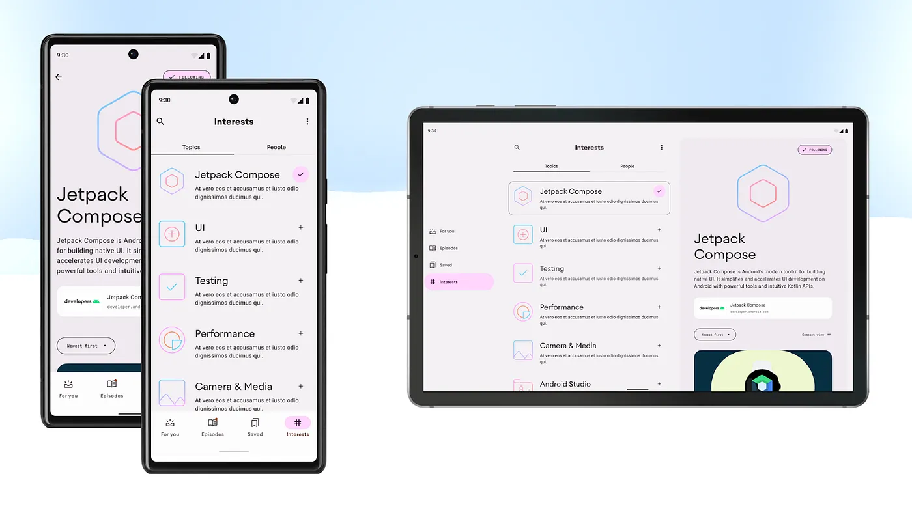

Crash Course on the Android UI Layer | Part 2
Part 2 - State Holders and Saving State
Description
This blog post series aims to summarise the Android Developer guidance on the UI layer. We’ll explore all the entities involved in it, understand the role each part plays, and discuss best practices.
By the end of this series, you will have a general understanding of what happens on the UI layer and how to best handle state and logic within it, the various APIs involved, and how to use them. Additionally, we’ll provide decision trees to assist you when you’re in doubt.
In part 1, we covered the UI and the UI state. You should already know the different entities present on the UI layer, and how to think about the UI and UI state effectively.
Now it’s time for Part 2! We’ll cover state holders and other UI layer-related topics such as where to hoist state and save UI state on Android.
If you prefer to consume this content in video format, check out the talk I delivered at Droidcon London 2023.
State holders
State holders simplify the UI by handling logic and/or exposing UI state. In this section, we’ll see how to implement state holders and the implementation details to consider.
To determine the implementation details, we first need to identify the types of logic commonly found in an Android app.
Types of logic
We have already discussed that business logic involves implementing the product requirements that specify how application data is created, stored, and modified. When business logic is present in the UI layer, it’s recommended to manage this logic at the screen level. We’ll see more of this later.
Another type of logic is the UI logic. UI logic determines how to display state changes on the screen. While business logic dictates what to do with data, UI logic determines how to visually display it. The UI logic is dependent on the UI configuration.
For instance, in a typical app, displaying a details screen may involve navigation when the app is running on a phone. However, it could entail showing an element next to another when running on a tablet.
 UI logic depends on the UI configuration. Displaying a details screen may involve navigation when the app runs on a phone or showing an element next to another when running on a tablet. You can see that in the Now in Android interests screen.
The different types of logic respond differently to configuration changes:
-
UI logic should re-execute if it’s affected by a configuration change.
-
Business logic should generally continue after a configuration change.
For instance, the UI logic that determines whether to display the bottom bar or the navigation rail should be re-executed or re-evaluated after a screen size configuration change. On the other hand, the business logic for following a particular interest or refreshing them shouldn’t be cancelled or restarted simply because the user rotated or unfolded the device. Such interruption wouldn’t provide a good user experience.
Where to handle that logic
Business logic on the UI layer should be handled as close as possible to the screen level. Most of the business logic is handled by the data layer. Thus, keeping it close to the screen makes it easier to scope the logic correctly and prevents low-level UI components from becoming tightly coupled to the business logic.
Business logic should be handled by the screen level state holder, which would normally extend from androidX.ViewModel.
When it comes to UI logic, it’s acceptable to manage it within the UI itself if the logic and state involved are relatively straightforward. However, when the UI becomes more complicated, it’s a good idea to delegate that UI logic complexity to a plain class state holder. In this case, the state holder wouldn’t extend from androidX.ViewModel.
We’ll see more of this in the upcoming sections! Now, let’s see how the different types of state and logic related to each other:
Diagram of how data flows in the app and the type of logic applied
As a summary of what happens on a typical screen, the data layer exposes application data to the rest of the hierarchy. The ViewModel then applies business logic to that data to produce the screen UI state. The UI itself or a plain state holder class observes the screen UI state to modify UI elements or its state.
Handling business logic — androidX.ViewModel
We’ve discussed the androidX.ViewModel or Architecture Components ViewModel class quite extensively as the implementation detail of a screen-level state holder.
In the code snippet below, we can observe its main functionalities: 1) exposing the screen UI state and 2) handling business logic.
@HiltViewModel
class InterestsViewModel @Inject constructor(
private val userDataRepository: UserDataRepository,
authorsRepository: AuthorsRepository,
topicsRepository: TopicsRepository
) : ViewModel() {
val uiState: StateFlow<InterestsUiState> = ...
fun followTopic(followedTopicId: String, followed: Boolean) {
viewModelScope.launch {
userDataRepository.toggleFollowedTopicId(followedTopicId, followed)
}
}
...
}
But why is the ViewModel the right place for this?
androidX.ViewModel benefits
The main benefit is that ViewModel survives configuration changes, offering a longer lifetime than the screen itself. You can scope a ViewModel to an Activity, Fragment, Navigation graph or the destination of a Navigation graph. When a configuration change happens, the system provides the same instance of the ViewModel.
Surviving configuration changes makes androidX.ViewModel the perfect place to expose the screen UI state and handle business logic. The screen UI state is also cached and instantly available before and after a configuration change. And business logic will continue executing if it was initiated with a ViewModel-scoped CoroutineScope (e.g. viewModelScope).
Another advantage lies in its seamless integration with other Jetpack libraries, particularly with Jetpack Navigation. Navigation retains the same instance of a ViewModel in memory when the destination is part of the back stack. This enables you to navigate back and forth between destinations in the back stack, with the data instantly available on the screen, without the need to reload the data every time you navigate back to that destination.
Jetpack Navigation also automatically destroys the instance of a ViewModel when the destination is no longer part of the back stack. Making it safe to go to a previous destination without seeing the previous user data on the screen.
Other Jetpack integrations include Hilt. By using the @HiltViewModel annotation, you can effortlessly obtain ViewModels with dependencies from the domain or data layers.
androidX.ViewModel best practices
ViewModel’s scoping is what makes this type suitable as an implementation detail of a screen-level state holder. However, this power shouldn’t be abused. Here are some best practices to keep in mind when using this class:
-
Use it at the screen level. Avoid using a ViewModel to handle the complexity of reusable UI elements. Due to its scoping, the same UI elements under the same ViewModel scope would get the same instance of a ViewModel. In most cases, this is undesirable.
-
Make the ViewModel generic enough to accommodate any UI form factor. The ViewModel should not be aware of which UI is using it. Keep the ViewModel’s API surface (exposed Screen UI state and functions exposed) representative of the application data it handles, rather than including UI-specific details. For example, when indicating that data is loading, the screen UI state might contain a field called
isLoadingrather thanshowLoadingSpinner. How the UI communicates data loading to the user is only relevant to the UI. -
Don’t hold references to lifecycle-related APIs. The ViewModel has a longer lifetime than the UI, and retaining references to
ContextorResourcesobjects can lead to memory leaks. -
Don’t pass ViewModels around. Considering all the points mentioned, keep the ViewModel class as close as possible to the screen level. Otherwise, you might inadvertently provide low-level components with access to more state and logic than they actually need.
androidX.ViewModel gotchas
Not everything is perfect in the ViewModel realm. There are certain considerations to keep in mind when using this API, especially in regard to ViewModel’s viewModelScope:
-
Work initiated using
viewModelScopecontinues to execute while the ViewModel is in memory. That’s good but can also lead to issues if the work runs for an extended period. For long-running work that might take more than 10 seconds to complete, consider other alternatives such as WorkManager. More about background work in the docs. -
Unit testing work triggered by
viewModelScoperequires some additional setup in the testing environment. TheMainDispatchermust be replaced in tests.
Using androidX.ViewModel
Does this section mean you always need to use ViewModel? Well, as the implementation of a screen-level state holder, yes, but only if the benefits apply to your app.
If you care about configuration changes (which, you should!) and/or you’re using other Jetpack libraries, it might make sense to use it. However, even if you decide not to, consider introducing a plain screen-level state holder class to handle the business logic complexity at the screen level.
Handling UI logic — Plain state holder class
You should introduce a state holder class when your UI starts growing in complexity. The threshold depends on you and your team. It’s a matter of when you feel the need to simplify the UI.
In the upcoming code snippet, there’s no immediate need to create a state holder for the UI. It merely contains an expanded boolean that is modified when the user interacts with the UI.
@Composable
fun <T> NiaDropdownMenuButton(items: List<T>, ...) {
var expanded by remember { mutableStateOf(false) }
Box(modifier = modifier) {
NiaOutlinedButton(
onClick = { expanded = true },
...
)
NiaDropdownMenu(
expanded = expanded,
onDismissRequest = { expanded = false },
...
)
}
When the UI requires more state and the associated logic becomes more complex, introduce a state holder. This is precisely what the Compose library does for some of its components. The following code snippet belongs to the state holder of the various Drawer composables:
@Stable
class DrawerState(
initialValue: DrawerValue,
confirmStateChange: (DrawerValue) -> Boolean = { true }
) {
internal val swipeableState = SwipeableState(...)
val currentValue: DrawerValue
get() { return swipeableState.currentValue }
val isOpen: Boolean
get() = currentValue == DrawerValue.Open
suspend fun open() = animateTo(DrawerValue.Open, AnimationSpec)
suspend fun animateTo(targetValue: DrawerValue, anim: AnimationSpec<Float>) {
swipeableState.animateTo(targetValue, anim)
}
}
A few points to observe there:
-
It holds state such as the
currentValueof the Drawer. -
State holders are composable.
DrawerStateinternally depends on another state holder:SwipeableState. -
It manages UI logic, including actions like opening the drawer and animating to a specific value.
Just as Compose offers these state holders, you can implement similar patterns in your project to simplify the UI. The following code snippet belongs to NiaAppState, the state holder of the NiaApp composable function.
@Stable
class NiaAppState(
val navController: NavHostController,
val windowSizeClass: WindowSizeClass
) {
val currentDestination: NavDestination?
@Composable get() = navController
.currentBackStackEntryAsState().value?.destination
val shouldShowBottomBar: Boolean
get() = windowSizeClass.widthSizeClass == WindowWidthSizeClass.Compact ||
windowSizeClass.heightSizeClass == WindowHeightSizeClass.Compact
fun navigate(...) { ... }
fun onBackClick() { ... }
}
In a similar fashion, it exposes UI state such as the currentDestination and whether or not to show the bottom bar, while also managing UI logic like navigating and handling back-click events.
Note: In Compose, the naming convention for state holders is to end with
State. That’s why we’re naming the classesNiaAppStateandDrawerState.
Plain state holder classes best practices
It’s actually recommended to create a state holder for reusable UI components. This enhances the reusability of the UI and provides external control.
Plain state holder classes can hold references of lifecycle-related APIs. These instances follow the UI lifecycle. When the UI goes through a configuration change, a new instance of the state holder is created. Thus, it’s acceptable to hold references to Context or Resources because there won’t be any memory leaks. In Jetpack Compose, these state holders are also scoped to the Composition.
If your plain class requires business logic, it’s a good practice to inject that functionality into the class. Whoever injects this functionality can ensure it outlives the UI scope.
Handling large ViewModels
If a ViewModel is handling the business logic complexity of several sizeable UI elements, it could potentially become large and challenging to manage and reason about. How could we simplify the ViewModel?
-
Introduce the domain layer. Delegate the business logic complexity of the ViewModel to use cases that handle interactions with different repositories. However, this approach may still result in a ViewModel with a substantial list of use cases to depend on.
-
Create multiple state holders for the various elements of the UI and hoist them in the ViewModel so that they can get all its benefits. The ViewModel essentially becomes a state hoisting mechanism that survives configuration changes.
-
Instead of #2, you might consider creating multiple ViewModels to manage the complexity of those non-reusable UI elements. While this approach is acceptable, bear in mind that ViewModels operate with unbounded memory, and when you have multiple ViewModels, it can become challenging to monitor their size and memory footprint.
Where to hoist state
You should place state in the lowest common ancestor that reads or writes the state.
As a recap: In the UI, you might 1) not have state at all, 2) have state in the UI itself, 3) have state in a state holder in order to simplify the UI, 4) hoist the state higher up in the UI tree so that other composable callers or ancestors can control the state, 5) hoist the state in a ViewModel if it’s needed by business logic.
If the state is required by business logic, whether for reading or writing, it should be hoisted in the screen-level state holder. If not, it should be placed in the appropriate node of the UI tree.
Let’s take a look at the UI hierarchy of a typical Chat app and discuss why certain state is placed where it is:
UI tree of a typical Chat app
-
The screen UI state should be placed in the ViewModel (#5) because the ViewModel applies business logic to create it.
-
The LazyList is part of the
ConversationScreenand not theMessagesListbecause the screen has additional functionality that require that state, such as scrolling to the most recent messages when the user sends a new message inUserInput.
To learn more about this topic, check out the State hoisting in Compose talk by Alejandra Stamato.
Saving UI state
In this blog post, we’ve explored the androidx.ViewModel API as a means to preserve state across configuration changes. However, Android provides additional alternatives to safeguard your state even more effectively.
The SavedState APIs enable your state to persist through configuration changes and system-initiated process death. The system stores this data in a Bundle, requiring the data to be parcelized for storage. Typically, you’d store transient UI state that depends on user input or navigation.
Ultimately, to survive not only the above but also unexpected app dismissals (e.g. the user killing your app), you can use persistent storage. This is subject to disk space limitations and is typically used for storing application data.
Summary of the different APIs to save UI state on Android
For more information about this topic, check out the Saving UI state on Android talk.
Conclusion
After reading this crash course on the UI layer, you should have a general understanding of the processes occurring within this layer and the tools required to manage state and logic effectively.
How Android is designed to make your app reactive to different UI Configurations and devices makes some API decision trees more complex than some Developers might like. But at the same time, it also gives you the tools to make your app behave as expected, delivering a great user experience.
Hope you enjoyed this read! Feel free to share your thoughts or ask questions in the comments section! Thank you üòä
Remember that if you prefer to consume this content in video format, check out the talk I delivered at Droidcon London 2023.